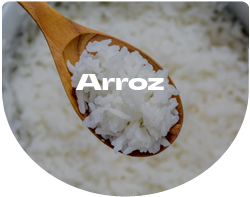
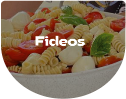

Bienvenidos a Marolio
Marolio es una empresa argentina dedicada a la producción y comercialización de alimentos y productos que LE DAN SABOR A TU VIDA
Historia de Marolio
Marolio fue fundada en 1950 por la familia Marolio en la ciudad de Buenos Aires. A lo largo de los años, la empresa ha crecido y se ha expandido, convirtiéndose en una de las marcas que mas sabor le da a tu vida.
Productos de Marolio
- Galletitas
- aceite
- arroz
- fideos


Contenido Multimedia
Aqui encontraras nuestra seccion escalofriantemente atractiva de nuestro contenido multimedia.
Y para los amantes de la musica, aqui les dejamos una cancion que les va a encantar